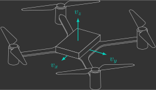
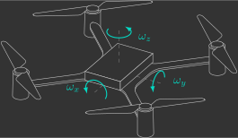
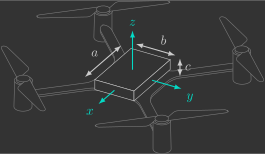

Inércia
Todo corpo resiste a mudanças em seu estado de movimento — essa resistência é o que chamamos de inércia.
No caso de um drone, que está livre para se mover e girar no espaço, a inércia se manifesta de duas formas principais, e ambas são fundamentais para entender como ele responde aos comandos de controle:
- Massa — representa a resistência a movimentos lineares (como subir/descer, avançar/recuar ou deslocar-se lateralmente). É a chamada inércia translacional.
- Momento de inércia — representa a resistência a movimentos angulares (como rolar, inclinar ou guinar). É a chamada inércia rotacional.
Controlar bem um drone exige compreender essas duas formas de inércia — e como elas influenciam as acelerações que conseguimos impor a ele.
Massa
A massa representa o quanto o drone resiste a mudanças na velocidade ao longo de um eixo de translação. Ela depende da quantidade de matéria e é a mesma em qualquer direção. Ou seja, não importa se o movimento é para cima, para frente ou para o lado: temos apenas uma única massa.

Exercício 1
Podemos calcular a massa do drone somando a massa de seus componentes:
- O drone que já considera bateria, PCB, motores, hélices, etc.
- O módulo de expansão que é acoplado embaixo
Determine a massa total do drone somando a massa de seus componentes. Elas podem ser obtidas nas especificações técnicas no site da Bitcraze (cujos links foram disponibilizados acima).
Resposta
Momento de Inércia
O momento de inércia representa o quanto o drone resiste a mudanças na velocidade angular em torno de um eixo de rotação. Ao contrário da massa, ele depende não apenas da quantidade de matéria, mas também de como ela está distribuída em relação ao eixo de rotação. Como o drone pode girar em torno de três eixos (rolagem, inclinação e guinagem), ele possui três momentos de inércia: um para cada eixo.

Exercício 2
Podemos calcular os momentos de inércia do drone considerando um modelo mais simples1:
Determine a momento de inércia total do drone em torno de cada um de seus eixos. As dimensões necessárias podem ser obtidas com o auxílio de um paquímetro, já as massas podem ser obtidas nas especificações técnicas no site da Bitcraze (cujos links foram disponibilizados acima).
Resposta
A bateria possui \(9,10 \, g\) de massa e dimensões \(3,3 \times 2,0 \times 0,8 \, cm\):
Assim, usando uma tabela de momentos de inércia de um paralelepípedo temos que:

Os motores (\(2,30 \, g\)), com hélices (\(1,34 \, g\)) e suportes (\(0,33 \, g\)), possuem \(3,97 \, g\) de massa total e estão a \(10 \, cm\) de distância na diagonal:
Assim, considerando eles como massas puntiformes temos que:

Dessa forma, os momentos de inércia totais são dados por:
Ou, de forma aproximada, e no S.I. (Sistema Internacional de Unidades):
-
Estamos desprezando a estrutura de PCB do drone, já que sua massa é pequena comparada à da bateria e dos motores, além de estar concentrada próxima ao centro de massa. ↩